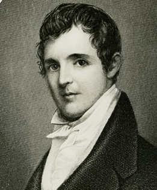
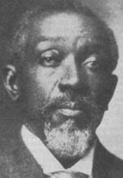

|
Located just south of Vicksburg along the Mississippi
River, Davis Bend was the site of one of the first
experiments in African American free labor during the Civil
War. Originally designed as a model for antebellum slave
plantations, Davis Bend, instead, became a model for how to
transform slave labor to a free labor system, while still
|

Joseph Davis, the older brother of
Confederate President Jefferson Davis, and founder of
Davis Bend
|
maintaining profitability. In addition, the plantations on
Davis Bend attempted to create a community of cooperation,
whereby black farmers and laborers were given more autonomy
over production and their daily lives.
Joseph Davis, a successful Mississippi lawyer, founded
Davis Bend in 1827. Influenced by utopian thinkers, Davis
sought to create a model plantation, whereby slaves were
given more freedom and responsibility. Davis provided his
slaves with better food and housing. He encouraged the
development of skilled labor, and rewarded superior work
with gifts and other financial incentives. Moreover, a slave
jury authorized punishments on the plantation, not the
overseer.
Within this environment, Davis encouraged the development
of individual slaves, most notably Benjamin Montgomery.
Montgomery, a self-educated and skilled engineer, oversaw
levee construction and served as a cotton gin mechanic. He
quickly distinguished himself as a leader and an
entrepreneur by establishing a store on the Davis
plantation, selling goods to white people and even
establishing a line of credit with New Orleans wholesalers.
With the help of Montgomery, the Davis Bend plantation
prospered in the antebellum era.
The Civil War, however, fundamentally transformed Joseph
Davis's dream of a community of cooperation. Davis abandoned
the Davis Bend plantations ahead of the advancing Union
Army. Most of his slaves, though, resisted Davis's
entreaties to flee with him and some even looted the
plantation's mansions after his departure.
Union military leaders hoped to transform Davis Bend into
a black colony that would serve as a model for the
transition from slave to free labor and operate as a haven
for freedmen. Blessed with rich soil and a pre-existing
labor force, Davis Bend was a prime location for an
experiment that hoped to prove the superiority of a free
labor system. There also were political motives for
establishing a black colony. Jefferson Davis, the president
of the Confederacy, was Joseph Davis's younger brother and
had administered one of the plantations (Brierfield) on
Davis Bend before the War.
The Freedmen's Bureau assumed control of Davis Bend in
1865 and leased land to freedmen who in turn planted cotton.
Black lessees turned a profit and benefited from the
protection of the Union Army. Self-government was
reestablished, including a court system, an elected sheriff,
and a board of education. Overall, the experiment was a
success.
Carrying on a revised vision of Joseph Davis's dream, Ben
Montgomery believed that in order for Davis Bend to become a
utopian community black people needed to be in control of
the plantations. In 1866, Montgomery purchased (under
favorable terms) the Davis Bend plantations from Joseph
Davis. Although damaging floods and pests plagued the first
couple of years, the all-black Davis Bend plantations
|

Davis Bend remained under the management
of Ben Montgomery and his son Isaiah (shown here) until the
1880s.
|
thrived during Reconstruction, producing some of the highest
quality cotton in the country. To defuse white opposition,
Montgomery emphasized the utopian ideal of Davis Bend and
publicly discounted the importance of African American
political activity. Nonetheless, the sizable population of
freedmen in Davis Bend attracted Republican politicians who
depended on their votes in statewide offices.
The freedmen benefited from fertile land, favorable
credit terms, and protection from white intrusion, but by
1875, the David Bend community began to decline as
Reconstruction came to an end. Jefferson Davis sued and
reclaimed the Brierfield plantation. Poor cotton crops in
1875 and 1876 depleted Montgomery's capital reserves,
forcing him to turn over to creditors one of the remaining
two plantations.
Unlike other experiments with black free labor, such as
the Port Royal experiment, the Davis Bend freedmen were
adept at raising cotton and turning a profit. Their success
owed to the unique leadership of Ben Montgomery and his
prior experience in plantation management. It was his
commitment to an all-black community, however, that enabled
him to win the trust of the freedmen and attract the
opposition of white Mississippians. The post-war community
succeeded because the freedmen were given more autonomy and
control over their crops and their persons.
Source: Joan Waugh, ed., Facts on File Encyclopedia of American
History: Civil War and Reconstruction, 1856 to 1869 (New York: Facts on
File, 2003), 91-92.
|